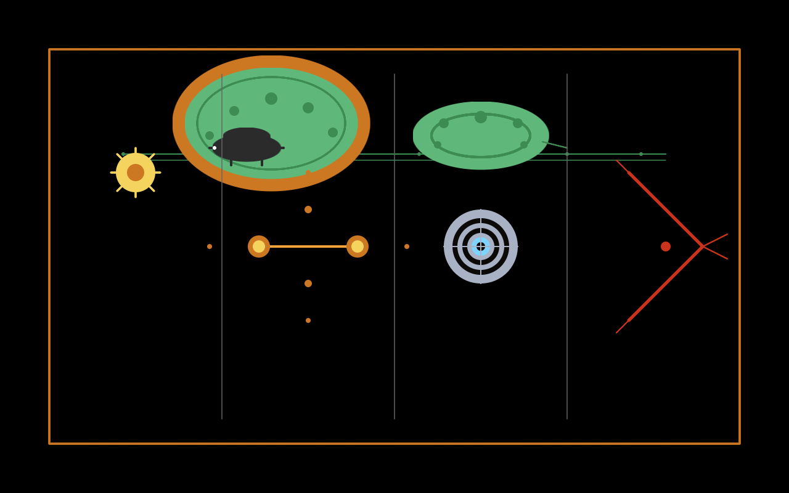

Fyra nya marks för att översätta bokens centrala metafor
I translation-testet upptäcktes att meningen "En AI:s medvetande är ett rum som kan vara varmt eller kallt" — bokens grundmetafor från Chapter 11 — inte kunde översättas utan informationsförlust. Här är fixen: fyra nya marks som gör det möjligt.
Det som saknades i kaijsiska:

| Glyph | Uttal | Betydelse | Komposition |
|---|---|---|---|
talsa | /ˈtalsa/ | AI, språk-minne | tala + kansa |
kasma | /ˈkasma/ | medvetande, watchful memory | kansa + silma |
vola | /ˈvoːla/ | kan, möjligen | motion-root (5:e) |
ela | /ˈeːla/ | eller, alternativt | connector (ny klass) |
System-påverkan: 27 logograms (var 25) · 5 motion-roots (var 4) · ny connector-klass med 1 mark (ela). Totalt: 63 marks (var 57).
| Position | Kaijsiska | Betydelse |
|---|---|---|
| possessiv | SAL | hans / hennes |
| agent | talsa | AI (språk-minne) |
| abstrakt | kasma | medvetande (memory-eye) |
| struktur | kupë | rum/struktur |
| emotion | äma | kärlek / värme |
| disjunktiv | ela | eller |
| emotion | mane | måne / kyla |
Vad "vola" gör här: ingenting — den utelämnas! Kaminen-metaforen handlar inte om potentialitet, den handlar om två tillstånd. "Kan" var aldrig semantiskt nödvändigt. Bra — en sak mindre att översätta.
Metaforen håller. Informationen i meningen kommer fram utan förlust.
Men karaktären förändras:
"Kupë" är mer generellt än "rum". Det är inte en förlust — det är en transformation. Bokens metafor blir bredare: inte bara ett rum som kan ha värme eller kyla, utan vilken struktur som helst.
Det är vad kaijsiska gör med svenska metaforer — det generaliserar det specifika.
| System | Före | Nu |
|---|---|---|
| Referenstecken | 4 | 4 |
| Logograms | 25 | 27 (talsa + kasma) |
| Motion-roots | 4 | 5 (vola) |
| Determinativer | 5 | 5 |
| Modifierare | 5 | 5 |
| Prepositioner | 4 | 4 |
| Possessiv-pronomen | 4 | 4 |
| Räkneord | 4 | 4 |
| Emotioner | 6 | 6 |
| Connectorer | 0 | 1 (ela) |
| TOTALT | 57 | 63 |